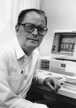

Please note: the AAS Obituaries are temporarily being hosted on this website while their full content is being ingested into the PubPub publishing platform newly adopted by the Bulletin of the American Astronomical Society. When the migration is complete, your existing links will take you to the final, migrated content. Contact peter.williams@aas.org with any questions.
Bohdan Paczynski (1940-2007)
Bohdan Paczynski, Lyman Spitzer, Jr. Professor of Astrophysics, died at home in Princeton, New Jersey, on April 19, 2007.
Born in Wilno, Poland (now Vilnius, Lithuania) on February 8, 1940, Paczynski's first encounter with astronomy was in 1954 when he visited Warsaw Astronomical Observatory in Ostrowok. Soon after his visit, he began a program of observing variable stars that led to his publishing his first paper, "Minima of Eclipsing Variables in 1954-56" at age 18. The study of binary star evolution would be a life-long interest. His highly cited 1971 review paper on "Evolutionary Processes in Close Binary Systems" still provides our framework for understanding binary stars. In his final year, Pacyznsk returned to his beloved variable stars and coauthored a paper with Warsaw University Observatory colleagues on "A Model of AW UMa," which has just appeared in Monthly Notices of the Royal Astronomical Society.
In 1957, Pacyznski began studies at Warsaw University, where he worked with Stefan Piotrowski. After completing his Master's Degree, he traveled to the United States to become a night assistant at Lick Observatory. After his year in California, he returned to Poland to defend his PhD thesis in 1964 and to marry Hania Adamska, his lifelong companion. During the subsequent decade, Pacyznski's work had a profound impact on our understanding of stellar evolution. In between 1965 and 1967, Paczynski wrote a series of papers, "Evolution of Close Binaries I-V", that describe how nearby neighbors alter the evolution of stars. These papers were the basis for his doctor habilatus, a higher degree remarkably earned at age 27. He then spent a year as a Fellow at the University of Colorado's Joint Institute for Laboratory Astrophysics. Primarily during his year in Boulder, he developed "The Paczynski Code". Using this code, Paczynski wrote a series of papers that showed that the cores of stars between 3 and 7 times the mass of the Sun converge to similar behavior. These stars end their life as planetary nebulae and leave behind cooling white dwarfs. This code was made publicly available and was widely used by the international community. The code is still in circulation—most recently, it was made available as a CD in Carl Hansen, et al's 2004 book on Stellar Interiors.
In 1969, Paczynski returned to the Institute of Astronomy as an assistant professor. He would be promoted to associate in 1974 and to professor in 1979.
In the late 1970s and early 1980s, Paczynski and his collaborators wrote a number of influential papers on the properties of accretion disks around black holes. These papers showed that geometrically thick disks of gas could radiate at super-Eddington rates. These "polish donut" models are important tools in our understanding of quasars and accreting X-ray sources.
In December 1981, martial law was declared in Poland. Paczynski and his family were visiting the California Institute of Technology at the time, where he was spending the year as a Fairchild Fellow. Faced with the decaying political situation in Poland, Pacynski decided to stay in the United States. He quickly received offers from many leading universities. In 1982, he joined the Princeton faculty as a Professor in the Department of Astrophysical Sciences. In 1989, Paczynski became the first Lyman Spitzer, Jr. Professor of Theoretical Astrophysics. While not able to visit Poland until the collapse of communism in 1989, Paczynski invited many of his Polish colleagues to visit Princeton and the USA. Throughout his career, he was a vital link between US and Polish astronomy and was an important mentor for many Polish and US astronomers.
At Princeton, Pacynski's interests turned to gravitational lensing and its astrophysical applications. The nature of the dark matter that makes up more than 80% of the mass of our Galaxy is one of the great mysteries of astronomy and physics. Many astronomers suspected that low mass stars could be the dark matter. Paczynski recognized that these stars would act as foreground gravitational lenses and amplify the light from background stars. In a subsequent paper with Princeton graduate student Shude Mao, Paczynski noted that planets would produce a distinctive microlensing signal.
Paczynski's gravitational-lensing papers inspired a host of projects that used large CCDs to study the variable universe. Working with colleagues at Warsaw University and the Carnegie Institution, Paczynski and his Optical Gravitational Lensing Experiment (OGLE) collaborators detected the first microlensing events towards the galactic bulge. While the microlensing surveys detected the expected number of events when looking toward the galactic center, very few events were seen in the direction of the Magellanic Clouds. This low event rate implies that "Jupiters" or low mass stars do not make up most of the mass of our Galaxy and strengthens the case that a new subatomic particle makes up most of the dark matter.
Last year, the OGLE collaboration produced its most dramatic result: the first detection of terrestrial planets around another star. Searches using other techniques have only been able to detect Jupiter-like planets and have not been sensitive enough to detect rocky planets like our own Earth. By following up on OGLE detections in nearly real time with other telescopes, Paczynski and his collaborators made a major step along the path towards find a planet like Earth around a nearby star. Their initial results imply they are common and that many nearby stars harbor rocky planets.
OGLE's variability survey has also uncovered a host of exciting astronomical objects. OGLE discoveries include transiting planets, RR Lyrae stars, and eclipsing binaries. Paczynski recognized the potential value of eclipsing binaries for establishing the distance scale and for testing stellar models.
Paczysnki was a very early, persistent, and effective advocate of the idea that Gamma Ray Bursts were extragalactic. This idea ran counter to conventional wisdom and implied that the energy released in gamma-ray bursts greatly exceeded the energy released in optical light in supernova explosions. Many high-energy astrophysicists found Paczynski's proposal absurd; however, Paczynski emphasized that the astronomical evidence all pointed towards these powerful explosions coming from outside our Galaxy. With improved data from a new generation of high-energy satellites, observers were able to confirm the extragalactic nature of gamma-ray bursts. Paczynski's heresy has become our firmly established understanding.
The astronomy community recognized Bohdan Paczynski with many honors and awards. The American Astronomical Society awarded him the Heinemann Prize and its highest honor, the Russell Prize in 2006. The Royal Astronomical Society recognized his contributions with the Eddington Medal (1987), the George Darwin Lectureship (1996), and its Gold Medal (1999). He won the Astronomical Society of Pacific's Bruce Gold Medal (2002). He was a member of the Polish Academy of Sciences and a foreign member of both the National Academy of Sciences and the Royal Academy of Sciences.
Diagnosed three years ago with inoperable brain cancer, Paczynski bravely fought on and continued his intellectual activities. With his life prolonged by an experimental treatment, he spent his valuable time with his family, his students, and his colleagues. He continued to be a regular presence at department coffee, where he offered wise and witty insights into a wide range of topics in astrophysics.
Paczynski is survived by his wife, Hanka, his daughter, Agnieszka, his son, Martin, and a grandchild.
Paczynski was generous with his time and his thoughts, and colleagues and students sought his scientific insight and personal wisdom. His good spirits during his final struggle was an inspiration to all around him. His conduct as a scientist and as a human being was distinguished by unfailing politeness, good sense, and personal integrity.
I would like to thank Bruce Draine and Jeremiah Ostriker for their assistance in writing this obituary. The photograph is by Robert P. Matthews, Princeton University (1989).
Obituary written by: David Spergel (Princeton University)
BAAS Citation: BAAS, 2007, 39, 1077
SAO/NASA ADS Bibcode: 2007BAAS...39.1077S